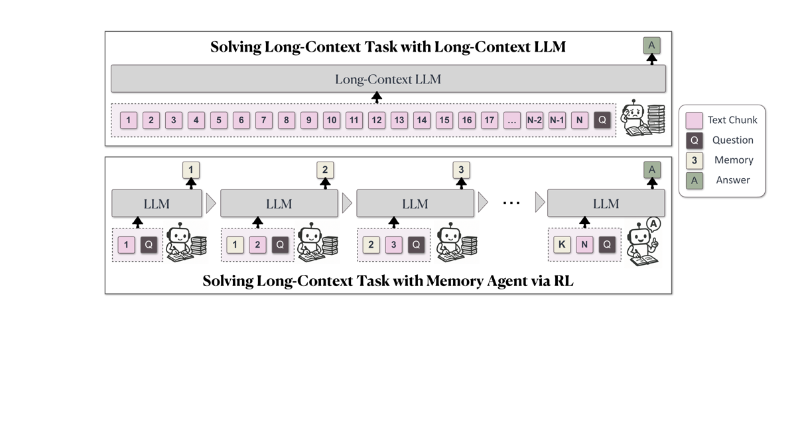
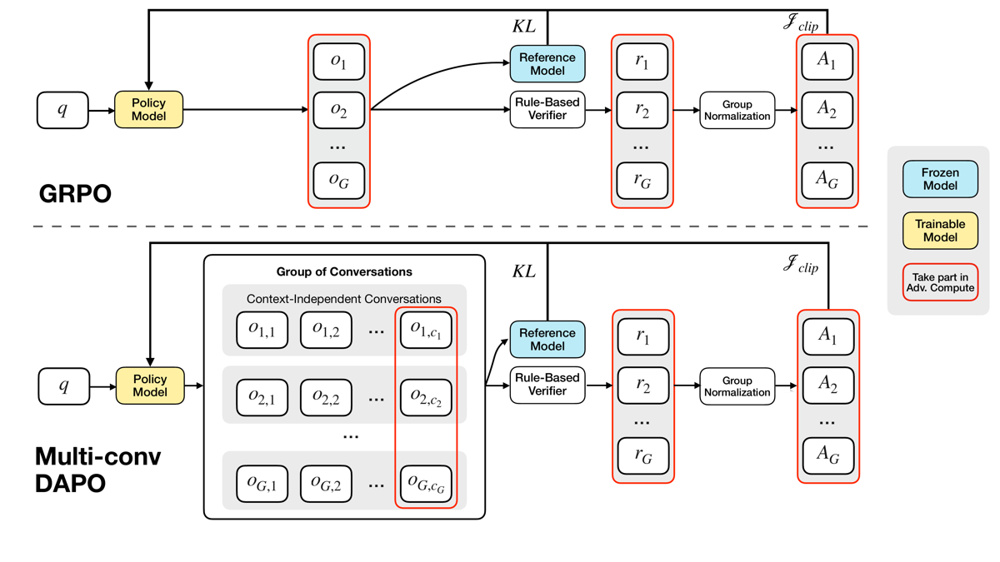
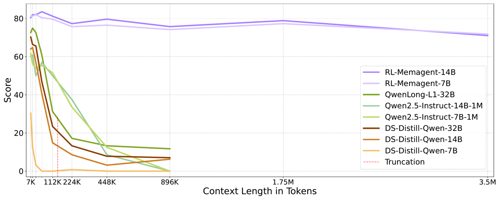

TL;DR : au lieu d'étendre la fenêtre de contexte, on fait lire le document par chunks à un LLM à fenêtre fixe (8K) qui réécrit intégralement (overwrite) une mémoire en langage naturel de 1024 tokens à chaque tour, et on optimise cette politique d'écriture end-to-end par RL outcome-only (Multi-conv DAPO), la récompense ne portant que sur la réponse finale.
Claim principal précis : un Qwen2.5-{7B,14B}-Instruct entraîné avec une fenêtre de 8K sur des documents de 32K (stage I) puis ≤60K (stage II) conserve ~71-72 % de sub_em sur RULER-HQA à 3,5 M tokens contre 80-81 % à 7K [Tab. 1], soit −9,4 points absolus, là où tous les baselines à contexte long (Qwen2.5-1M, QwenLong-L1-32B, DS-Distill) s'effondrent entre 0 et 17 % dès 224K-896K [Tab. 1, Fig. 1]. Coût inférence linéaire en N au lieu de quadratique [App. B, Fig. compute].
⚠️ Le claim porte sur du QA extractif court vérifiable par sub_em ; rien dans le papier ne teste une sortie longue et argumentée.
Origine des tâches : entièrement synthétiques, minées depuis HotpotQA, par les auteurs. Aucune annotation humaine nouvelle.
Pipeline de construction (stage I) [App. A.3 §train] : 1. Source : split train de HotpotQA (80 000 questions traitées). 2. Filtrage anti-mémorisation : on écarte les questions où Qwen2.5-7B-Base ou Qwen2.5-7B-Instruct atteint 100 % en Best-of-2 sans aucun contexte. ~50 % des données sont filtrées (« questions de culture générale déjà internalisées »). 3. Synthèse façon RULER : les golden paragraphs sont noyés dans des distracteurs échantillonnés dans le même dataset (autres items Wikipédia de HotpotQA). Chaque échantillon = 200 articles, ~28K tokens (~32K annoncé ailleurs). 4. On garde les 32 768 premiers échantillons traités.
Stage II [App. A.3] : 2 560 instances, longueur max 60K tokens, issues de DocQA-RL-1.6K (le jeu RL de QwenLong-L1, wan2025qwenlong), mélangées à des données du stage I.
Volume total : 32 768 (stage I) + 2 560 (stage II). Distribution de difficulté : non précisé au-delà du filtrage pass@k ci-dessus ; pas d'histogramme de difficulté.
Filtrage par pass@k du modèle de base : oui, mais dans un sens inhabituel — filtrage no-context Best-of-2 = 100 % → suppression. C'est un filtre de contamination paramétrique, pas un filtre de difficulté : rien n'élimine les tâches trop dures ou trop faciles avec contexte.
Curriculum : explicite, deux stages [§3.1] — stage I « acquérir la capacité de mémoire fondamentale », stage II « transférer vers des contextes plus divers et des tâches plus dures ». Passage au stage II « quand le stage I a pleinement convergé, ~400 steps » [App. A.3]. Pas de rééchantillonnage adaptatif intra-stage décrit. Pas de curriculum sur la longueur (l'entraînement reste à 32K/60K ; l'extrapolation est purement du test-time).
Contamination & séparation train/test : - Le filtre no-context adresse la mémorisation du backbone. ✅ bon réflexe, rarement fait. - Le test RULER-HQA est synthétisé « avec le même pipeline » depuis le split validation de HotpotQA, 128 échantillons, nombre d'items wiki de 50 à 6400 (≈7K→3,5M tokens) [App. A.3]. Split distinct ✅, mais distribution de test identique à la distribution d'entraînement du stage I — RULER-HQA est de l'in-distribution, pas de l'OOD. Le papier le dit lui-même : « created using the same synthetic method as in the first-stage training data » [§3.1]. - ⚠️ Non traité par les auteurs : le stage II s'entraîne sur DocQA-RL-1.6K, et l'éval LongBench-QA porte sur 2Wiki / HotpotQA / MuSiQue / NarrativeQA / Qasper. Le papier ne dit nulle part quelles sources composent DocQA-RL-1.6K ni s'il y a recouvrement avec LongBench-QA. Le risque de fuite train→test sur le seul benchmark « naturel » du papier n'est ni écarté ni discuté. Non précisé.
Données SFT/IFT avant RL : aucune. Pas de cold-start SFT ; le workflow est imposé par prompt template sur le modèle Instruct, et le RL part de là. L'ablation « MemAgent sans RL » [§3.3.1] est précisément le workflow appliqué zero-shot.
Coût humain : nul en annotation (tout dérive de HotpotQA + DocQA-RL-1.6K existants). Non chiffré.
Ce n'est pas un env à outils : c'est un harness de streaming documentaire. Il n'y a ni sandbox, ni appel externe, ni non-déterminisme d'environnement.
Observation à chaque tour — exactement trois blocs, dans une conversation neuve à chaque chunk (contextes indépendants, pas de concaténation) [§2.1, Tab. 5] :
- <problem> : la question (budget 1024 tokens)
- <memory> : la mémoire produite au tour précédent (budget 1024 tokens)
- <section> : le chunk de document courant (5000 tokens)
- sortie : la nouvelle mémoire (budget 1024 tokens)
Total 8192 tokens fenêtre, le reste réservé au chat template [§3.1].
Espace d'actions : un seul « outil » implicite — réécrire intégralement la mémoire. Pas de liste d'outils, pas de signature, pas d'action de retrieval, pas de search. L'overwrite est total : le modèle regénère la mémoire complète, il n'y a pas d'opération d'append/delete structurée. C'est le point de design central et sa fragilité (cf. §5).
Prompt template — recopié verbatim [Tab. 5, App. A.1] :
Context-Processing (à chaque chunk) :
You are presented with a problem, a section of an article that may contain the
answer, and a previous memory. Please read the section carefully and update the
memory with new information that helps to answer the problem, while retaining all
relevant details from the previous memory.
<problem> {prompt} </problem>
<memory> {memory} </memory>
<section> {chunk} </section>
Updated memory:
Answer-Generation (une fois le stream épuisé) :
You are presented with a problem and a previous memory. Please answer the problem
based on the previous memory and put the answer in \boxed{}.
<problem> {prompt} </problem>
<memory> {memory} </memory>
Your answer:
⚠️ Incohérence mineure : le template demande \boxed{} [Tab. 5] alors que l'éval extrait par regex le format the answer is ANSWER [App. A.4]. Les deux formats coexistent dans le papier sans explication.
Multi-turn : oui, mais multi-conversation à contextes indépendants, ce qui est différent d'un multi-turn classique. Le modèle ne voit jamais l'historique des tours précédents — seulement la mémoire. Conséquence : la longueur de contexte ne croît jamais, d'où l'extrapolation.
Horizon : K = ⌈c / 5000⌉ conversations + 1 tour de réponse. Typique en entraînement : 32K/5000 ≈ 7 tours (stage I), 60K/5000 = 12 tours (stage II). Maximal en test : 3,5M / 5000 = 700 tours. À 512K : ~102 tours — le papier affirme « more than 100 turns of dialogue » [§3.2, NIAH]. ⚠️ Écart d'horizon train/test de ~60× (12 tours vus en RL, 700 exécutés en test) : c'est le vrai saut d'extrapolation, et il n'est jamais discuté comme tel.
Gestion du contexte long : par construction — pas de troncature du document, pas de résumé hiérarchique, pas de mémoire externe. Seule la mémoire de 1024 tokens survit. La troncature de la mémoire à 1024 tokens est le mécanisme d'oubli implicite (et la cause du failure mode principal, §5).
Exécution : pas de sandbox ni d'API externe. Déterminisme total côté env (le document est fixe). Reset trivial. Timeouts : non précisé. Framework : verl [§3.1], étendu maison pour le multi-conversation à contextes indépendants.
Gestion des erreurs / sorties mal formées : non précisé. Aucune pénalité de format, aucun filtrage des mémoires mal formées, aucun traitement des dépassements de budget de génération n'est décrit. La troncature brutale à 1024 tokens est visible dans les traces (App. F : « Tata Consultancy Services Limited (TCS), an Indian multinational information technology ( » — coupé en plein mot).
Exemple de trajectoire [App. C, case study MemAgent-14B] — question 2-hop « The director of the romantic comedy 'Big Stone Gap' is based in what New York city? » : - Chunk 1 contient « Ghost (production team) ... based in New York City » (distracteur plausible). Memory1 : le modèle note qu'il n'y a pas l'info demandée, mais stocke quand même le distracteur « Ghost ... based in New York City » — comportement de rétention préemptive sur mots-clés de la requête. - Chunk 2 : aucun document pertinent. Memory2 : mémoire conservée à l'identique, + une ligne méta « The problem remains unanswered ». Robustesse à la distraction. - Chunk 3 : contient les deux entrées pertinentes (Big Stone Gap → Adriana Trigiani ; Trigiani → Greenwich Village). Memory3 : les deux faits sont écrits, la chaîne 2-hop est résolue dans la mémoire elle-même, et la réponse « Greenwich Village, New York City » y figure en clair. - Tours restants : mémoire figée, puis réponse finale.
Les auteurs affirment que ces comportements (stockage préemptif, résistance aux distracteurs, mise à jour immédiate) « ne résultent pas de mécanismes d'attention architecturaux mais émergent comme des capacités de génération renforcées par le RL » [App. C].
⚠️ Observation personnelle sur cette trace : la mémoire n'est pas un résumé, c'est une liste de faits bruts quasi copiés-collés des documents, précédée d'un paragraphe de méta-raisonnement verbeux. Le « raisonnement » se fait donc par accumulation extractive, pas par compression abstractive. Pertinent pour le juridique (cf. §9) : c'est plus proche d'un dossier de pièces que d'une note de synthèse.
Type : rule-based, outcome-only, binaire au niveau de la trajectoire. Formellement [§2.2] :
R(ŷ, y) = 𝟙[is_equiv(y, ŷ)]
Règle précise [App. A.4] :
- Extraction de la réponse par regex, format attendu the answer is ANSWER (le prompt, lui, demande \boxed{} — cf. §2).
- Score sub_em (substring exact match) : « une réponse est correcte si elle contient tous les éléments de la ground truth ».
- Crédit partiel : « quand une réponse comporte plusieurs parties et que la réponse attendue doit toutes les inclure, le score correspond à la proportion de parties correctes fournies ». Donc pas strictement binaire sur les questions multi-parties.
- Normalisation préalable de la ground truth et de la réponse : suppression des articles définis, insensibilité à la casse, « étapes de normalisation standard » à la suite de QwenLong-L1 / RULER / HELMET.
Granularité : outcome pur. Aucun reward sur les mémoires intermédiaires — c'est explicitement le pari du papier (§4). Aucune supervision de process sur la qualité de la mémoire.
Termes additionnels : aucun reward de format, aucune pénalité de longueur, aucun bonus. Le seul terme additionnel est la KL (traitée comme régularisation, cf. §4). L'entropy loss est désactivée [App. A.3].
Fiabilité du vérifieur : NON MESURÉE. Aucun accord inter-annotateur, aucun taux de faux positifs/négatifs, aucune validation contre des humains. ⚠️ C'est le trou d'evidence le plus important du papier au vu de mes objectifs, d'autant que sub_em est structurellement sujet aux faux positifs : une mémoire qui accumule des centaines d'entités (cf. traces App. F, où la mémoire contient des dizaines de sièges sociaux) a une probabilité non nulle de contenir la ground truth par accident. Sur NIAH (needle = nombre à 7 chiffres ou UUID) le risque est négligeable ; sur RULER-HQA et LongBench-QA (réponses = noms de villes, de personnes) il ne l'est pas. Les auteurs ne le discutent pas.
Si juge LLM : sans objet — pas de juge LLM, ni pour l'entraînement ni pour l'éval QA. LongBench-SUM est évalué en recall ROUGE-{1,2,L} [Tab. 2], métrique automatique non validée elle non plus.
Robustesse / attaque du vérifieur : non testée. Aucun test adversarial, aucune inspection de faux positifs.
Algorithme : Multi-conv DAPO — extension maison de DAPO [yu2025dapo] au cas où une trajectoire produit n_i conversations à contextes indépendants au lieu d'une seule séquence.
Ce qui change exactement par rapport à DAPO standard [§2.2, Fig. 3, App. A.2] :
1. Dimensionnalité de la loss : on passe de (group, token) à (group, conversation, token). Chaque conversation est une cible d'optimisation indépendante.
2. Attribution de l'advantage entre conversations — le point technique central : l'advantage est calculé uniquement à partir de la conversation finale (celle qui contient la réponse notée par le vérifieur), puis appliqué uniformément et à l'identique à toutes les conversations issues du même échantillon [§2.2, légende Fig. 3]. Il n'y a aucun credit assignment entre tours : le tour 1 et le tour 700 reçoivent le même scalaire. Formellement :
Â_{i,j,t} = R_i − mean({R_i}_{i=1}^G) [Eq. 1]
Le facteur j (l'indice de conversation) n'apparaît pas à droite — c'est exactement ce qui rend la méthode indifférente au nombre de tours.
3. Pas de division par l'écart-type : « suivant Dr. GRPO [liu2025understanding], nous ne divisons pas l'advantage par l'écart-type » [§2.2].
4. Normalisation de la loss par le nombre total de tokens de toutes les conversations du groupe : facteur 1 / Σ_i Σ_j |o_{i,j}| [Eq. 2] — token-level loss à la DAPO, mais étendue sur les conversations.
5. Clip asymétrique ε_low / ε_high conservé de DAPO [Eq. 2].
6. ⚠️ Divergence par rapport à DAPO standard non commentée par les auteurs : DAPO supprime la KL (β = 0) et introduit dynamic sampling + overlong reward shaping. Ici, une KL est réintroduite avec β = 1e-3 [App. A.3], et ni le dynamic sampling ni l'overlong filtering ne sont mentionnés. Ce qui est appelé « DAPO » est donc, en pratique, un GRPO token-level avec clip-higher, sans std-normalization et avec KL.
⚠️ Trois incohérences internes sur l'algorithme, à signaler :
- KL : l'Eq. 2 place la KL comme terme de loss (−β D_KL), tandis que l'Algorithme 1 [App. A.2] la place comme reward shaping (r_g ← r̂_g − β d_g, ligne 11). Ce n'est pas la même chose (gradient différent).
- Normalisation : l'Eq. 1 et le texte disent explicitement pas de division par l'écart-type (Dr. GRPO), mais l'Algorithme 1 ligne 14 écrit {A_g} ← GroupNorm({r_g}) et la Fig. 3 affiche une boîte « Group Normalization » sur les deux branches. Contradiction directe texte ↔ pseudocode ↔ figure.
- Portée de l'optimisation : la contribution revendiquée est d'optimiser toutes les conversations ; or l'Algorithme 1 ne construit le ratio d'importance que sur y_g, la réponse finale (ρ_g ← π_θ(y_g|h_{g,c_g}) / π_θ_old(y_g|h_{g,c_g}), ligne 16) et agrège J ← (1/G) Σ_g J_g — le pseudocode publié ne décrit pas la loss (group, conversation, token) de l'Eq. 2. ⚠️ Le pseudocode de la section « Reproducibility » contredit la méthode revendiquée. C'est un défaut sérieux pour qui voudrait réimplémenter.
Hyperparamètres [App. A.3, §3.1] :
| Paramètre | Valeur |
|---|---|
| KL (coef. β) | 1e-3 ; modèle de référence gelé π_ref [Alg. 1] |
| Entropy loss | désactivée |
| Taille de groupe G | 16 |
| Rollout batch size | 256 |
| Mini-batch | ≠ rollout/16 « du fait du multi-conversation » (valeur effective non précisée) |
| Off-policy | oui — ratio sample batch : backprop batch fixé à 16 |
| Optimiseur | AdamW |
| LR | 1e-6 constant, warm-up linéaire sur 20 steps |
| Steps | stage I ≈ 400 jusqu'à convergence ; total et steps du stage II : non précisé |
| Longueur max de génération | 1024 tokens (budget mémoire/sortie dans la fenêtre 8K) |
| Fenêtre totale | 8192 (1024 query + 5000 chunk + 1024 memory + 1024 output + chat template) |
| ε_low / ε_high | symboles présents dans Eq. 2 et Alg. 1, valeurs numériques non précisées |
| Température de sampling | non précisé |
| Seeds | non précisé (aucune mention) |
Stabilité : aucune instabilité rapportée, aucune astuce de stabilisation décrite au-delà de la KL et de la désactivation de l'entropy loss, rien sur ce qui a été essayé puis abandonné. Non précisé.
Compute : non précisé — aucun GPU-heure, aucun nombre de GPU, aucune durée d'entraînement. ⚠️ Pour un papier dont l'argument central est l'efficacité, l'absence totale de coût d'entraînement est notable. La Fig. compute [App. B] ne concerne que les FLOPs d'inférence estimés (estimateur FLOP Qwen2Model de verl), pas de mesure wall-clock, pas de coût d'entraînement.
Dynamique : aucune courbe de reward, de longueur de réponse ou d'entropie n'est publiée. Le seul signal dynamique est « le stage I converge en ~400 steps ». Non précisé pour tout le reste.
Le papier consacre une annexe entière (App. F, « Failure Pattern Study ») à trois modes d'échec documentés par diffs de mémoire tour à tour — c'est la partie la plus utile du papier et la plus rare dans la littérature.
Cas 1 — Information Overwritten [App. F.1]. Question : « Where is the company that Sachin Warrier worked for as a software engineer headquartered? » (2-hop, réponse : Mumbai).
- Comportement : au tour 60, la mémoire est déjà saturée de faits non pertinents (sièges sociaux de Pizza Pizza, TI Automotive, Cosmos…). Au tour 289 le modèle capte correctement l'info clé (TCS → Mumbai, Maharashtra) ; au tour 290 il tente de l'ajouter en fin de mémoire, où elle est tronquée en plein mot (« Tata Consultancy Services Limited (TCS), an Indian multinational information technology ( ») et le préambule redevient « does not contain any information ». Au tour 317 le modèle se résume spontanément pour libérer de la place — mais le fait est déjà perdu, et il le remplace par une hallucination (« corporate headquarters is in Faridabad, Haryana », faux). Au tour 433 il trouve la 2ᵉ pièce (Sachin Warrier → TCS Kochi) et conclut sur la valeur hallucinée.
- Détection : inspection manuelle des diffs de mémoire.
- Correction : aucune. Le papier documente, ne corrige pas.
- ⚠️ C'est le failure mode structurel de l'overwrite : la troncature silencieuse de la mémoire produit des hallucinations persistantes, qui se propagent sur des centaines de tours sans possibilité de révision. Aucun mécanisme de détection de troncature n'existe dans le harness.
Cas 2 — Missing Critical Information [App. F.2]. Question multi-hop « who is the younger brother of the episode guest stars of The Hard Easy? » (réponse : Bill Murray). - Comportement : au tour 143 le modèle voit l'info clé (Brian Doyle-Murray est le frère aîné de Bill Murray) mais raisonne explicitement qu'elle n'est pas pertinente (« the information about Brian Doyle-Murray and Bill Murray is not directly relevant ») car le prérequis (l'identité des guest stars) n'est pas encore observé. Au tour 215 il découvre les guest stars — trop tard, la pièce 1 n'a pas été retenue. - Détection : idem, diffs. - Correction : aucune. - ⚠️ Conséquence directe du single-pass irréversible : sur du multi-hop, la pertinence d'un fait dépend d'un fait futur. L'architecture n'offre aucun second passage ni aucune relecture. C'est une limite de principe, pas un bug d'entraînement.
Cas 3 — Primacy Bias [App. F.3]. Question « Brown State Fishing Lake is in a country that has a population of how many inhabitants? » (ambiguïté country = pays / comté ; réponse : 9 984, la population du comté de Brown). - Comportement : dès le tour 1 le modèle fixe l'interprétation « pays = United States », la renforce au tour 617 en écrivant « the population of the United States is around 327,167,434 », et bien qu'il finisse par écrire la bonne donnée au tour 728 (« Brown County, Kansas … population was 9,984 »), il conclut quand même sur 327 M. - Détection : idem. - Correction : aucune. - ⚠️ La mémoire ne stocke pas que des faits : elle stocke aussi du méta-raisonnement (« the problem is asking for X, therefore Y »). Ce méta-raisonnement se réinjecte à chaque tour et devient un prior auto-renforçant qu'aucune évidence ultérieure ne révise. Failure mode propre aux mémoires en langage naturel.
Reward hacking : aucun cas mentionné dans le papier, et aucune section n'y est consacrée.
⚠️ Mon évaluation : l'absence est partiellement crédible — le reward est sub_em contre une ground truth courte sur une tâche où le modèle n'a aucun levier sur le vérifieur (pas d'accès aux tests, pas de juge à persuader). Mais deux angles restent non vérifiés et exploitables :
1. Sur-rétention comme hack de sub_em : puisque sub_em récompense le fait de contenir la réponse, la stratégie optimale sous un budget de 1024 tokens est de copier un maximum d'entités brutes plutôt que de comprendre. Les traces App. F montrent précisément cela (mémoires = listes de sièges sociaux). Le papier lit ce comportement comme de la « rétention préemptive » vertueuse [App. C] ; c'est aussi la lecture reward-hacking. Sans mesure de faux positifs du vérifieur, on ne peut pas trancher.
2. Fuite du raisonnement dans la mémoire : la mémoire du case study contient la phrase de réponse complète avant le tour final. Le tour de réponse devient trivialement copiable. Bénin ici, mais cela signifie que la mémoire n'est pas une mémoire, c'est un brouillon de réponse — ce qui affaiblit la lecture « compression apprise ».
Comportements émergents positifs revendiqués [App. C] : stockage préemptif sur mots-clés, immunité aux chunks vides, résolution de chaînes 2-hop à l'intérieur de la mémoire, auto-résumé spontané quand la mémoire sature (tour 317, App. F.1 — émergent et non récompensé explicitement).
sheng2024hybridflow], avec une extension maison pour le multi-conversation à contextes indépendants [§3.1]. C'est la contribution infra réelle, mais elle n'est pas décrite (ni schéma, ni gestion du batching de conversations de longueurs variables n_i).⚠️ Avertissement préalable : l'abstract arXiv v2 (meta.json) et l'abstract du source LaTeX ne disent pas la même chose. L'un annonce « performance loss < 5% », l'autre « less than 10% ». Les deux sont confrontés ci-dessous.
| Chiffre annoncé | Où il est annoncé | Source dans le papier | Verdict |
|---|---|---|---|
| « extrapolate … to a 3.5M QA task with performance loss < 5% » | abstract arXiv v2 (meta.json) |
Tab. 1 : 14B 80,47 @7K → 71,09 @3,5M = −9,38 pts (−11,7 % relatif) ; 7B 81,25 → 71,88 = −9,37 pts (−11,5 % relatif) | contredit — annoncé <5 %, tabulé −9,4 pts / −11,7 % relatif, quelle que soit la lecture |
| « … with a performance loss of less than 10% » | abstract du source LaTeX | mêmes valeurs : −9,38 et −9,37 points | confirmé, mais uniquement en lisant « 10 % » comme points absolus ; en relatif (−11,7 %) c'est faux. Formulation ambiguë |
| « achieving over 95% on the 512K NIAH test » / « 95%+ in 512K RULER test » | abstract (LaTeX et arXiv) | Tab. 8 (App. D.1), config par défaut m1024-c5000 : 14B = 98,18 ; 7B = 96,62 à 512K | confirmé |
| « minimal performance loss of less than 5% at 512K » (NIAH) | §3.2, paragraphe NIAH | Tab. 8 : 14B 99,74 @8K → 98,18 @512K = −1,56 pt ; 7B 100,00 → 96,62 = −3,38 pts | confirmé |
| « the evaluation at 512K involves more than 100 turns of dialogue » | §3.2, paragraphe NIAH | Non tabulé. Déductible du design : 512K / 5000 = ~102 chunks [§3.1, App. B] | confirmé par construction, jamais mesuré ni tabulé |
| « trained on 32K text » | abstract arXiv v2 | App. A.3 : stage I = 32K ; stage II = jusqu'à 60K ; §1 et Conclusion disent « trained on 60K-length sequences » | sur-généralisé — vrai du seul stage I ; le modèle évalué a vu 60K. L'abstract arXiv minimise l'entraînement, le corps le maximise |
| « 8K context window » | abstract, §1, §3.1 | §3.1 : 1024 query + 5000 chunk + 1024 memory + 1024 output + chat template = 8192 | confirmé |
| « linear computation cost / O(N) » | abstract, §1, §2.1 | App. B + Fig. compute : estimateur FLOP verl, 8K→4M | confirmé pour les FLOPs d'inférence estimés ; aucune mesure de latence réelle → non vérifié empiriquement |
| « RL-MemAgent achieves SOTA on almost all metrics » (LongBench-SUM) | §3.2, paragraphe LongBench-SUM | Tab. 2 : MemAgent-14B en gras sur ROUGE-1, ROUGE-L, AVG (les 2 datasets) ; MemAgent-7B en gras sur ROUGE-2 (les 2 datasets) | confirmé si l'on agrège les deux tailles de modèle (8 colonnes / 8 au meilleur score) ; aucun modèle unique ne domine partout |
| « outperforming larger long-context or reasoning models » (LongBench-QA) | §3.2 | Tab. 3 : MemAgent-14B AVG 51,0 vs QwenLong-L1-32B 50,7 et DS-Distill-32B 49,0 | confirmé mais sur-généralisé : l'écart sur le meilleur baseline est de +0,3 point sans aucune barre d'erreur, sur 200 exemples/tâche. Non significatif en l'état |
| « MemAgent outperforms Mem0 » (comparaison agent) | App. D.2 | Le protocole Mem0 est décrit en détail (GPT-5.1, text-embedding-3-large, chunks 5000, top-30) mais aucun chiffre Mem0 n'apparaît dans aucun tableau (Tab. 10, Tab. 11 ne contiennent que des lignes RAG) | introuvable — claim non étayé par une seule valeur |
| Probe : 14B « random » AVG = 75,78 | Tab. 4 | La moyenne des 7 valeurs de la ligne (80,47…79,69) vaut 80,91 ; 75,78 est la valeur @896K de Tab. 1 | contredit — erreur de transcription (la ligne 7B, elle, est correcte : 79,58) |
Vérifié le 2026-09-28 : 9 verdicts « contredit » contrôlés contre full.tex + meta.json + le PDF publié (2 dans ce tableau — abstract arXiv « <5 % » vs Tab. 1 ; AVG 75,78 de Tab. 4 — et 7 dans le reste du mémo, tous des reformulations de ces deux-là ou des trois incohérences algorithmiques de §4) — 9 confirmés, 0 corrigés, 0 infirmés. Détail des contrôles : Tab. 1 donne bien 80,47 @7K → 71,09 @3,5M (14B, −9,38 pts / −11,7 % rel.) et 81,25 → 71,88 (7B) ; l'abstract meta.json dit bien « performance loss < 5% … 95%+ in 512K RULER test » là où l'abstract LaTeX (l. 631) dit « less than 10% … over 95% on the 512K NIAH test » ; la ligne 14B random de Tab. 4 a pour moyenne réelle 80,91 et affiche 75,78, qui est la colonne 896K de Tab. 1 (la ligne 7B, elle, est juste à 79,58) ; Alg. 1 place bien la KL en reward shaping (l. 11) contre un terme de loss dans Eq. 2, écrit bien GroupNorm (l. 14) contre « we do not devide the advantage by the standard deviation » (§2.2), et ne construit le ratio que sur y_g (l. 16) ; la boîte « Group Normalization » est bien présente dans les deux branches de la Fig. 3 (figure inspectée). Deux corrections apportées au mémo au passage : (a) toutes les références tables/annexes étaient décalées — réalignées sur le PDF publié (Tab. 2↔Tab. 3, Tab. 6→Tab. 8, Tab. 7→Tab. 10, Tab. 8→Tab. 11 ; App. C→App. B, App. D→App. C, App. E.x→App. F.x, App. F.1→App. D.1, App. F.2→App. D.2) ; (b) l'apport de MemAgent-14B sur RAG top-8 était annoncé « +1,5 à +8,6 pts », il est en réalité de −0,78 à +8,60 (RAG top-8 bat MemAgent à 224K : 78,12 vs 77,34), et à 3,5M le meilleur RAG est K=6 à 66,41, soit +4,68 et non +6,25.
Synthèse 7.0 : le cœur technique (extrapolation NIAH 512K, linéarité, fenêtre 8K) est confirmé. Mais le chiffre le plus mis en avant dans l'abstract arXiv (« < 5 % de perte à 3,5M ») est contredit par le tableau principal du papier lui-même, les deux versions de l'abstract se contredisent entre elles, une comparaison annoncée (Mem0) n'a aucun chiffre, et un tableau contient une erreur arithmétique. → case coherence fausse.
RULER-HQA, sub_em (%) [Tab. 1] — extrait :
| Modèle | 7K | 112K | 448K | 896K | 1,75M | 3,5M |
|---|---|---|---|---|---|---|
| Qwen2.5-Instruct-7B-1M | 61,72 | 51,56 | 12,50 | 0,00 | N/A | N/A |
| Qwen2.5-Instruct-14B-1M | 60,16 | 50,00 | 8,59 | 0,00 | N/A | N/A |
| QwenLong-L1-32B | 72,66 | 31,25 | 13,28 | 11,72 | N/A | N/A |
| DS-Distill-Qwen-32B | 70,31 | 23,44 | 7,81 | 7,03 | N/A | N/A |
| RL-MemAgent-7B | 81,25 | 79,69 | 76,56 | 74,22 | 77,34 | 71,88 |
| RL-MemAgent-14B | 80,47 | 81,25 | 79,69 | 75,78 | 78,91 | 71,09 |
Écart à 896K vs meilleur baseline (QwenLong-L1-32B, 11,72) : +64,06 pts pour MemAgent-14B. C'est le résultat massif du papier.
Le vrai baseline, c'est RAG [Tab. 10, App. D.2] — et l'écart s'effondre :
| Longueur | RAG+Qwen2.5-14B (K=8) | RL-MemAgent-14B | Écart |
|---|---|---|---|
| 7K | 78,12 | 80,47 | +2,35 |
| 112K | 76,56 | 81,25 | +4,69 |
| 224K | 78,12 | 77,34 | −0,78 |
| 448K | 77,34 | 79,69 | +2,35 |
| 896K | 74,22 | 75,78 | +1,56 |
| 1,75M | 70,31 | 78,91 | +8,60 |
| 3,5M | 64,84 | 71,09 | +6,25 |
⚠️ À retenir : un RAG top-8 naïf avec chunking sémantique tient 64,84 % à 3,5M [Tab. 10] là où tous les modèles long-contexte sont à ~0-12 % (dernier point mesuré, 896K). L'apport réel de MemAgent-14B sur RULER-HQA est de −0,8 à +8,6 points sur RAG top-8 (négatif à 224K : 77,34 vs 78,12), pas +64. Et le K=8 n'est pas toujours le meilleur RAG : à 3,5M c'est K=6 à 66,41 [Tab. 10], ce qui ramène l'écart à +4,68 sur la longueur extrême. Les auteurs ne mettent pas ce tableau dans le corps (il est en App. D.2), et la Fig. 1 / Tab. 1 n'affichent aucune ligne RAG. ⚠️ Choix de présentation qui flatte nettement la méthode.
LongBench-QA (sub_em, %) [Tab. 3 et Tab. 11] :
| Méthode | 2Wiki | HQA | MuSiQue | NQA | Qasper | AVG |
|---|---|---|---|---|---|---|
| Qwen2.5-Instruct-14B (backbone) | 67,0 | 63,5 | 39,0 | 20,0 | 20,5 | 42,0 |
| QwenLong-L1-32B | 83,0 | 69,5 | 51,0 | 26,0 | 24,0 | 50,7 |
| Meilleur RAG+Qwen2.5-14B (C=2048 K=8) | 77,5 | 68,5 | 42,0 | 21,0 | 27,5 | 39,42 |
| MemAgent-14B | 79,0 | 73,0 | 52,0 | 25,0 | 26,0 | 51,0 |
| MemAgent-7B | 74,0 | 69,5 | 47,0 | 21,5 | 29,0 | 48,2 |
Sur ce benchmark « naturel », MemAgent-14B bat nettement RAG (+11,6 AVG) et son propre backbone (+9,0 AVG), mais ne dépasse QwenLong-L1-32B que de +0,3.
LongBench-SUM (recall ROUGE, %) [Tab. 2] : MemAgent-14B GOV REPORT AVG 21,80 (meilleur ; 2ᵉ = Qwen2.5-14B-1M à 19,34) ; QMSUM AVG 31,39 (2ᵉ = MemAgent-7B à 31,27, puis Qwen2.5-14B-1M à 29,84). Gain réel mais modeste (+2,5 et +1,6 pts sur le meilleur non-MemAgent).
| Ablation | Où | Ce qu'elle montre |
|---|---|---|
| RL vs pas de RL | Fig. 4 (RULER-HQA), Fig. 6 (NIAH), Fig. 5 (LongBench-QA) | MemAgent sans RL bat les backbones mais se dégrade fortement quand la longueur croît ; sur LongBench-QA le workflow seul donne « une amélioration marginale voire négative ». Le RL est donc l'ingrédient nécessaire, pas le workflow. ✅ Ablation qui isole bien la contribution revendiquée. ⚠️ Mais aucun chiffre n'est donné en tableau — uniquement des figures |
| Taille de mémoire (256→4096) | Fig. 7, Fig. 8 | Performance « robuste sur différentes tailles de mémoire » ; m1024/c5000 est un « sweet spot » |
| Mémoire vs chunk à budget constant | Tab. 8 (NIAH), Tab. 9 (LongBench-QA) | NIAH : quasi-plat, 94,5-100 partout → la tâche ne discrimine pas. LongBench-QA : m1024-c5000 = 51,0 est bien le meilleur pour le 14B (m4096-c1928 = 48,5), et pour le 7B (48,2 vs 45,3). ✅ Le choix par défaut est justifié |
| Distribution du contexte (probe lost-in-the-middle / overwrite) | Tab. 4 | 5 placements des 2 groupes d'info clé : (0 %,100 %), (20 %,80 %), (40 %,60 %), (0 %,20 %), (80 %,100 %). Écarts vs random entre −3,91 et +7,82 pts, moyennes entre −0,11 et +2,79. Les auteurs concluent à l'absence de dégradation catastrophique. ✅ Ablation bien conçue — c'est le test direct du risque d'information-overwritten. ⚠️ Mais les écarts individuels (jusqu'à ±7,8 pts) sont du même ordre que ce qu'on attendrait du bruit sur 128 exemples, et aucun seed ni IC n'est donné ; l'erreur de moyenne sur la ligne 14B random n'inspire pas confiance |
GroupNorm (Alg. 1 + Fig. 3) ; pseudocode qui n'implémente pas la loss revendiquée ; \boxed{} (Tab. 5) vs regex the answer is (App. A.4).sub_em jamais validé (pas de mesure de faux positifs), alors que la méthode produit des mémoires qui accumulent des entités — configuration à risque de faux positifs. RULER-HQA est in-distribution avec le stage I, ce que les auteurs reconnaissent. Composition de DocQA-RL-1.6K non documentée → recouvrement possible avec LongBench-QA non écarté. Contamination du backbone, elle, correctement traitée (filtre no-context Best-of-2).Score evidence = 2/6 (baselines ✅, ablation ✅ ; variance ❌, coherence ❌, eval ❌, repro ❌).
Plausible mais fragile — à répliquer sur la partie algorithmique.
Le phénomène est solide et je le crois : le harness chunk + mémoire overwrite + RL outcome-only produit une extrapolation en longueur que rien d'autre n'atteint, l'ablation no-RL le montre proprement, et le transfert vers la summarization est un signal réel. La présentation, elle, est nettement plus flatteuse que les données : le chiffre phare de l'abstract est contredit par le tableau principal, le seul baseline vraiment compétitif (RAG, à 4,7 points seulement à 3,5M dans sa meilleure config, et devant MemAgent à 224K) est relégué en annexe, une comparaison annoncée n'a aucun chiffre, et la description formelle de l'algorithme se contredit en trois endroits. Sans seeds, sans code, et sans validation du vérifieur, je prendrais le design comme acquis et rien des marges fines (les +0,3 sur QwenLong-L1, le probe lost-in-the-middle).

Ce qu'il faut voir : le contraste de structure. En haut, le LLM long-contexte avale les N chunks + la question en un seul contexte qui croît linéairement (donc attention quadratique). En bas, MemAgent : chaque appel LLM ne voit que (mémoire k−1, chunk k, question) — trois cases, taille constante — et émet la mémoire k. Les contextes sont disjoints : rien de l'appel k−1 ne survit hors de la mémoire. C'est ce qui rend l'horizon (700 tours à 3,5M) découplé de la fenêtre (8K), et c'est aussi ce qui interdit tout retour en arrière (failure modes §5).
Ce qu'il faut voir : le point technique central, en un coup d'œil. Les cadres rouges (« take part in Adv. Compute ») entourent, dans la branche basse, uniquement la dernière conversation de chaque ligne (o_{1,c₁}, o_{2,c₂}, …) : seule la conversation finale passe au rule-based verifier. L'advantage A_g ainsi obtenu est ensuite appliqué à toutes les conversations du même échantillon — aucun credit assignment entre tours, le tour 1 et le tour 700 reçoivent le même scalaire. À noter aussi la boîte « Group Normalization », présente dans les deux branches, qui contredit le texte (§2.2 : « suivant Dr. GRPO, nous ne divisons pas par l'écart-type »).
Ce qu'il faut voir : les deux courbes violettes (MemAgent 7B/14B) restent dans la bande 71-84 sur trois ordres de grandeur de longueur, pendant que tous les baselines chutent vers 0-12 dès 224K et s'arrêtent à 896K (trait rouge « Truncation » = limite de fenêtre). ⚠️ Ce qu'il faut aussi voir : aucune ligne RAG n'y figure. Le baseline RAG top-8, qui tient 64,84 à 3,5M [Tab. 10, App. D.2], se placerait juste sous les courbes violettes et non dans le peloton effondré — la figure de première page donne donc une impression d'écart (+64 pts) que l'annexe ramène à +6,25 pts sur le RAG K=8, +4,68 sur le meilleur RAG à cette longueur (K=6, 66,41).| Ingrédient | Choix du papier | Équivalent juridique | Transfert | Ce qui manque |
|---|---|---|---|---|
| Source des tâches | QA synthétique : golden paragraphs HotpotQA noyés dans des distracteurs du même corpus, 32 768 items [App. A.3] | Question juridique dont la réponse tient dans 2-3 pièces (un considérant, une clause, un article), noyées dans un dossier / une base jurisprudentielle. Les distracteurs sont gratuits : même juridiction, même matière | direct — c'est la construction la moins chère du corpus, et elle ne demande aucun expert | Un jeu de Q/pièce-justificative apparié. En droit, le « golden paragraph » est souvent déjà annoté (citations dans une décision, renvois dans un mémoire) → minable automatiquement |
| Filtrage anti-mémorisation | Écarter les questions résolues sans contexte en Best-of-2 par le backbone ; ~50 % éliminés [App. A.3] | Écarter les questions que Gemini résout sans le dossier (droit général, articles célèbres) | direct | Rien. À faire systématiquement — c'est ce qui force l'agent à lire plutôt qu'à réciter, exactement le comportement voulu contre l'hallucination de citations |
| Vérifieur | sub_em sur réponse courte, binaire + crédit partiel proportionnel sur les réponses multi-parties, après normalisation [App. A.4]. Fiabilité jamais mesurée |
Pas d'équivalent sur une réponse juridique argumentée | non pour la réponse finale ; adaptable pour une cible intermédiaire vérifiable : l'ensemble des sources citées. Le crédit partiel proportionnel du papier est exactement une métrique de recall sur un set de citations | Tout. Aucun signal du papier ne dit comment noter une argumentation. C'est le point dur, et MemAgent ne le résout pas — il le contourne en choisissant une tâche où la vérité est extractive |
| Harness / outils | Chunk 5000 tok + mémoire 1024 tok en langage naturel, overwrite total, contextes indépendants, 2 prompts (update / answer) [§2.1, Tab. 5] | Lecture séquentielle d'un dossier de pièces, d'un corpus de jurisprudence, d'un contrat long. Mémoire = fiche de synthèse en cours de constitution | direct — c'est l'ingrédient le plus transférable de tout le papier, et il ne coûte que deux prompts | Une mémoire structurée plutôt qu'un bloc de texte libre : en droit il faut tracer quelle pièce porte quel fait. Le format libre du papier perd la provenance (visible dans les traces App. F : les faits sont stockés sans référence au document source) |
| Algo | Multi-conv DAPO : advantage calculé sur la conversation finale, répliqué uniformément sur toutes les conversations, pas de std-norm, KL 1e-3, G=16 [§2.2, App. A.3] | Identique — un dossier long = n conversations d'écriture de mémoire | adaptable : l'extension verl est à réimplémenter (le pseudocode publié est incohérent, §4) | Le credit assignment. Avec 700 tours et un scalaire unique, le gradient par tour est extrêmement bruité ; le papier ne le mesure pas. En juridique les dossiers sont plus courts (10-100 tours) donc c'est moins grave chez nous que chez eux |
| Curriculum | 2 stages : synthétique facile 32K (~400 steps) → réel difficile 60K mélangé au stage I [App. A.3] | Stage I : QA synthétique sur pièces noyées. Stage II : vraies questions de recherche juridique, mélangées au stage I | direct — le mélange stage I dans le stage II est la garde-fou anti-oubli, et c'est gratuit | Rien de conceptuel. Le stage II juridique coûte cher (c'est là que les experts interviennent), mais le papier montre qu'il en faut 2 560 items contre 32 768 pour le stage I : ratio 1/13. Utile pour budgéter |
| Anti-hacking | Aucun dispositif. Pas de reward de format, pas de pénalité, pas de test adversarial | La sur-rétention extractive (§5) deviendrait ici « citer tout ce qui ressemble à la question » — exactement le comportement à proscrire | non — rien à transférer, il faut concevoir | Un terme de précision, pas seulement de recall, sur les citations. sub_em ne pénalise jamais le bruit : sous ce reward, la stratégie optimale est de tout garder. En juridique, une note qui cite 40 arrêts dont 3 pertinents est un échec |
Meilleur ingrédient à transposer : le harness chunk + mémoire overwrite + RL outcome-only, avec le filtre anti-mémorisation.
Pourquoi celui-là et pas l'algorithme : parce qu'il résout un problème que nous aurons certainement (un dossier ou un corpus de recherche dépasse la fenêtre utile, même à 1M de contexte nominal — Tab. 1 montre que Qwen2.5-1M est à 0 % à 896K, c'est-à-dire que la fenêtre annoncée n'est pas la fenêtre utile), et parce qu'il ne demande aucun vérifieur nouveau : on réutilise le reward final, quel qu'il soit. Le résultat qui me convainc n'est pas les +64 points (in-distribution, et ramenés à +6 face à RAG), c'est LongBench-SUM : un reward QA extractif court a produit une compétence de mémoire qui transfère vers une tâche de génération longue [Tab. 2]. C'est précisément le pari qu'il faut faire en droit — entraîner sur ce qui est vérifiable (les sources) pour améliorer ce qui ne l'est pas (l'argumentation).
Deuxième ingrédient, sous-estimé : le filtre no-context Best-of-2. Une ligne de pipeline, ~50 % de données coupées [App. A.3], et il garantit que la tâche exige de lire le dossier. C'est la défense la moins chère contre l'hallucination de citations.
Expérience minimale
Construire un « Legal-RULER » : prendre N décisions (ou contrats) dont on connaît les passages cités, générer une question par décision dont la réponse exige 2 passages situés dans 2 pièces différentes, noyer dans 50→5000 pièces distractrices de la même juridiction/matière (longueurs 10K → 2M). Filtrer par no-context Best-of-2 sur le backbone. Entraîner le harness MemAgent (chunk 5000 / mémoire 1024, les deux prompts de Tab. 5 traduits) en Multi-conv DAPO, reward = recall sur l'ensemble des références citées (le crédit partiel proportionnel de App. A.4 s'applique tel quel) plus un terme de précision (l'ajout indispensable, cf. tableau ci-dessus).
Deux mesures, dans cet ordre : 1. Le harness tient-il ? Courbe de score vs longueur du dossier, contre (a) Gemini plein contexte, (b) RAG top-8 sur les pièces — le baseline qui compte, celui que le papier cache en annexe. Attendu, en extrapolant Tab. 1 et Tab. 10 : effondrement du plein contexte bien avant sa fenêtre nominale ; MemAgent au-dessus de RAG de quelques points seulement, l'écart se creusant avec la longueur. Si MemAgent ne bat pas RAG top-8, l'expérience est négative — c'est le critère d'arrêt, et c'est le critère que le papier n'affiche pas. 2. Le transfert existe-t-il ? Évaluer le modèle entraîné sur la tâche non vérifiable — rédaction de note, Harvey LAB / Vals — sans réentraînement. C'est le réplicat de LongBench-SUM. Attendu : gain modeste mais positif (le papier obtient +2,5 pts ROUGE-1 AVG sur GOV REPORT, Tab. 2). Un gain nul ici invaliderait la stratégie « entraîner sur le vérifiable pour améliorer le non-vérifiable » et c'est l'information la plus utile des deux.
Coût : pas de GPU-heures indiquées dans le papier (non précisé), mais la configuration — 7B/14B, fenêtre 8K, ~400 steps pour le stage I — est petite. C'est une expérience de quelques jours-GPU, pas de semaines.
Question à poser en interne chez GDM
Deux, liées :
Sur l'infra. MemAgent a dû étendre verl pour du rollout multi-conversation à contextes indépendants, et décrit le résultat comme « territoire inexploré » [§1]. La question n'est pas algorithmique, elle est pratique : notre stack RL sait-elle émettre une trajectoire de n générations séquentiellement dépendantes, de n variable, et backpropager un advantage unique sur les n ? Si oui, le coût d'entrée est de deux prompts. Si non, c'est le vrai travail, et il faut le chiffrer avant de promettre quoi que ce soit — d'autant que le pseudocode publié est inutilisable (il contredit la loss revendiquée, §4) et qu'aucun code n'est sorti.
Sur le credit assignment. Personne dans ce papier ne mesure ce que coûte l'advantage uniforme sur 700 tours — c'est posé, jamais évalué, et c'est la question ouverte que je retiens. Nos dossiers juridiques sont courts en comparaison (10-100 tours), donc la question se pose chez nous dans un régime bien plus favorable : y a-t-il déjà, en interne, une mesure de la dégradation du signal RL en fonction du nombre de tours d'une trajectoire à reward terminal unique ? Si ce nombre existe, il nous dit directement jusqu'à quelle taille de dossier ce design tient — et nous évite de le redécouvrir.